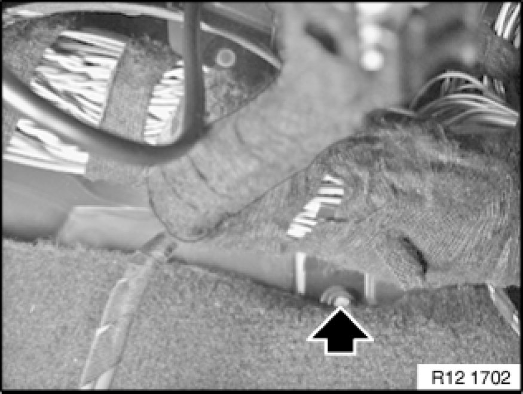
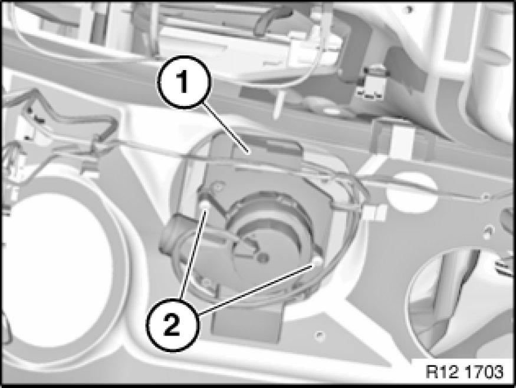

Central Electronics Box Fan: Service and Repair
12 90 100 - Replacing fan for electronics box

Necessary preliminary tasks:
- Switch off ignition.
- Follow instructions for disconnecting and connecting battery [1][2]12 00 ... Instructions For Disconnecting and Connecting Battery.
- Disconnect battery 61 20 900 Disconnecting and Connecting Battery Negative Lead ground terminal.
- Detach fuse box in passenger compartment and pull back; to do so, refer to Removing fuse box 61 13 050 Removing and Installing/Replacing Fuse Box In Passenger Compartment
Important!
Follow instructions for removing and installing electronic control units Service and Repair.

Pull back carpet.
Release lower nut on fuse carrier holder.
Pull holder slightly towards front.

Disconnect plug connections for fan motor (1).
Release screws (2). Remove fan.

Add final details to vehicle.
Read fault memory.